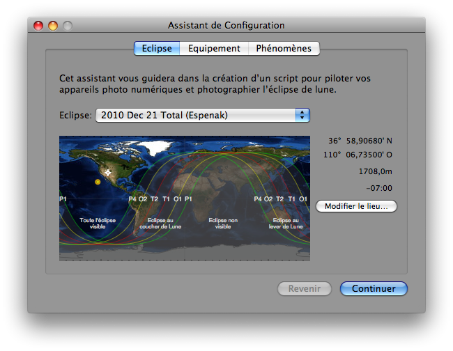
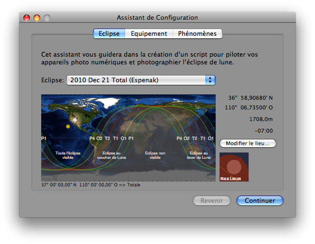
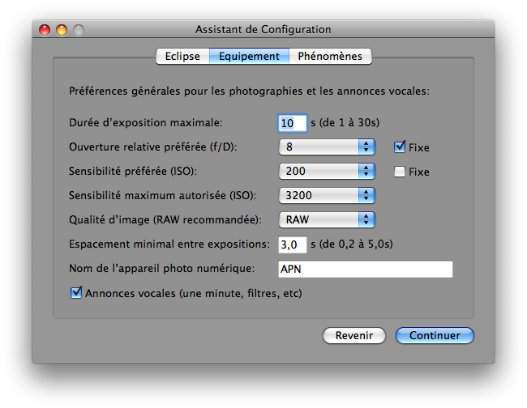
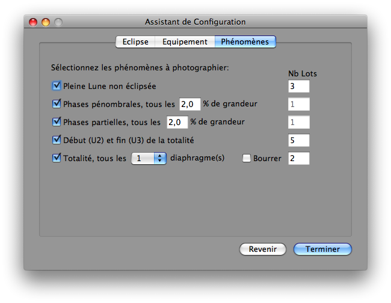

Fenêtre Assistant de Configuration
L’assistant de configuration vous aidera, lorsque vous débutez, à sélectionner l’éclipse de Lune souhaitée et votre lieu d’observation, puis les réglages par défaut de votre équipement photographique ainsi que les phénomènes à photographier et enfin générera un script de base pour prendre les photos automatiquement. Cependant sachez que le script généré est juste là comme point de départ afin de vous aider avec les bases; améliorer ensuite le script à la main est plus que recommandé par exemple pour utiliser des fonctionnalités plus puissantes. Pour cela vous devez ouvrir la fenêtre Assistant de Configuration depuis Lunar Eclipse Maestro.
-
Dans le menu Fichier sélectionnez Assistant de configuration…

-
Sélectionnez ensuite une éclipse de Lune à l’aide du menu déroulant Eclipse. Les éclipses sont classées par ordre chronologique.
Une fois l’éclipse choisie, ses courbes limites s’affichent sur la carte.
-
Les coordonnées en latitude et longitude, ainsi que le type de l’éclipse, du point survolé par le pointeur de la souris sont affichées en dessous de la carte. Celles du lieu d’observation courant sont affichées sur la droite avec en plus l’altitude et le fuseau horaire utilisé pour calculer l’heure locale. La croix cerclée blanche sur la carte représente la position courante de l’observateur.
Cliquez ensuite ensuite n’importe où sur la carte pour déterminer les coordonnées de votre lieu d’observation. Si votre Mac est connecté à l’Internet, alors l’altitude et le fuseau horaire du point du clic seront affichés. Dans le cas contraire, ces deux valeurs ne seront pas modifiées et un signe danger apparaîtra à droite de chacune de ces valeurs.
Le bouton Modifier le lieu… vous permet de modifier à la main toutes les valeurs pour une meilleure précision. Il permet aussi de visualiser et transférer les valeurs retournées par un GPS connecté au Mac.

Un schéma du maximum de l’éclipse depuis le lieu survolé est aussi affiché sur la droite de la carte.
-
Vous devez ensuite paramétrer les valeurs par défaut de votre équipement photographique. Pour ce faire cliquez soit sur le bouton Continuer, soit sur l’onglet Equipement. Ces valeurs seront utilisées par le générateur automatique de script.

-
Et enfin choisissez les phénomènes que vous souhaitez photographier en cliquant soit sur le bouton Continuer, soit sur l’onglet Phénomènes.

-
Cliquez ensuite sur le bouton Terminer pour générer le script. Vous aurez la possibilité de le nommer et de le sauvegarder où vous le souhaitez.
|